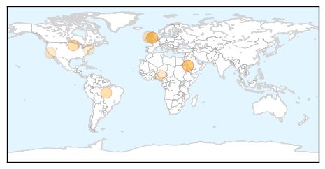

30 Day Trends
Web: 0 alerts, 0 warnings
Twitter: 1 alerts, 0 warnings
Top Articles:
- 0.991
- Meningitis case sparks Minnesota immunization effort
- 0.990
- Africa risks large meningitis outbreak
- 0.907
- 2m meningitis vaccines ready for local pilgrims
- 0.901
- Saudi- 2m meningitis vaccines ready for local pilgrims
- 0.878
- Students urged to take new vaccine against deadly meningitis strain
- 0.862
- Doctors to write to every 17 and 18 year old today about new Meningitis vaccine
- 0.788
- Students urged to get new meningitis vaccine
- 0.664
- School leavers urged to get new meningitis vaccine
- 0.639
- Q&A: What A Year Without Polio in Nigeria Means
- 0.631
- Students to be vaccinated against meningitis
- 0.619
- GPs launch new MenW vaccination campaign
- 0.535
- York's Bureau of Health offering free immunizations
Top Tweets:
-
No tweets found for Aug 03, 2015
Web/News Articles

Tweets

Article Locations
Article Confidences